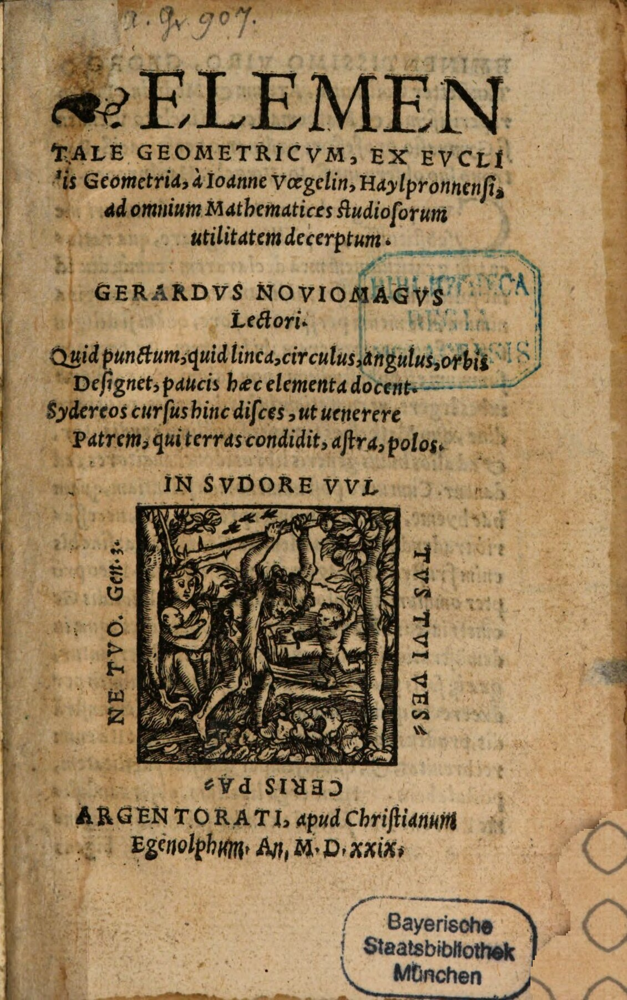

Vögelin 1 (Gerhard Geldenhauer)
Faksimile

Transkription
Gerardus Noviomagus Lectori.
Quid punctum, quid linea, circulus, angulus, orbis
Designet, paucis haec elementa docent.
Sidereos cursus hinc disces, ut venerere
Patrem, qui terras condidit, astra, polos.
Übersetzung
Gerhard Geldenhauer an den Leser.
Was der Punkt, die Linie, der Kreis, der Winkel und die runde Fläche darstellen, lehren diese Grundbausteine in wenigen <Worten>. Hierdurch wirst du die Bahnen der Sterne lernen, damit du den Vater verehrst, der die Erde, die Sterne und das Himmelsgewölbe erschaffen hat.
Metadaten
| Titel des Gedichts: | Gerardus Noviomagus Lectori. |
| Autor der Gedichts: | Gerhard Geldenhauer (Gerardus Noviomagus) |
| Containerwerk: | Elementale Geometricum, ex Euclidis Geometria, a Ioanne Voegelin, Haylpronnensi, ad omnium Mathematices studiosorum utilitatem decerptum, Straßburg 1529 |
| Autor des Containerwerks: | Johannes Vögelin (Ioannes Voegelin) |
| Gattung des Containerwerks: | Fachschriftstellerei, Lehrbuch, Geometrie |
| Erscheinungsjahr: | 1529 |
| Verschlagwortung: | Geometrie, Punkt, Linie, Kreis, Winkel, Fläche, Astronomie, Sterne, Gott, Erde, Himmel |